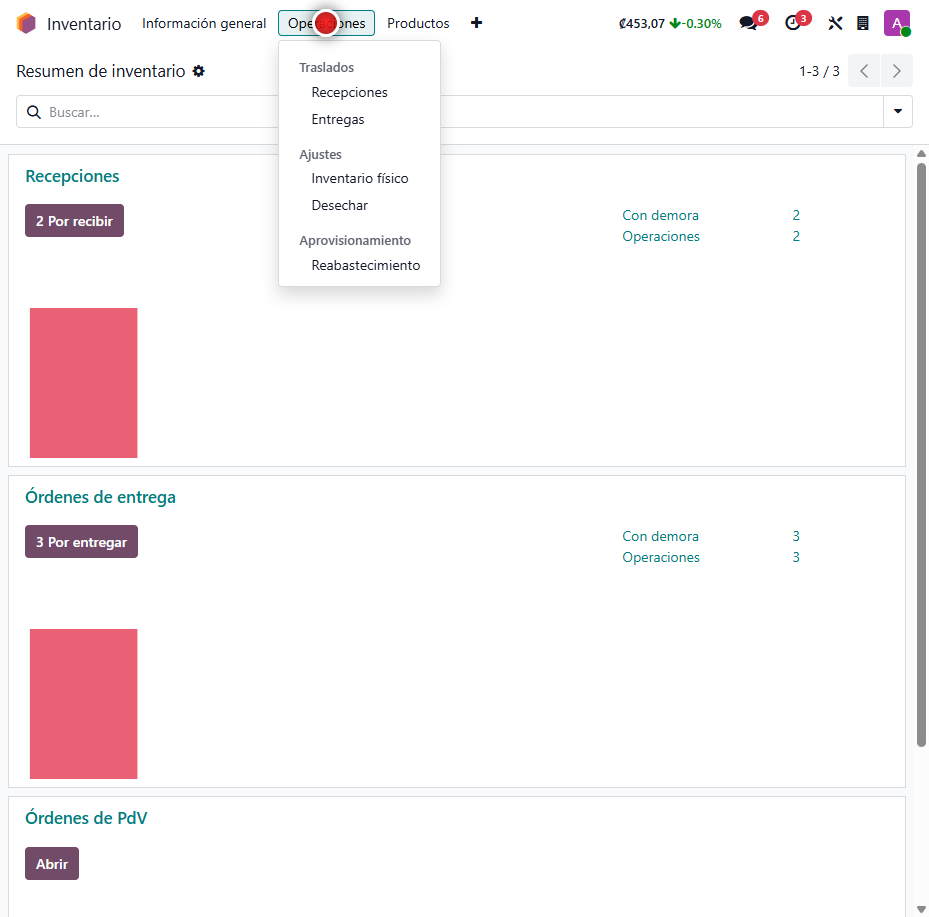
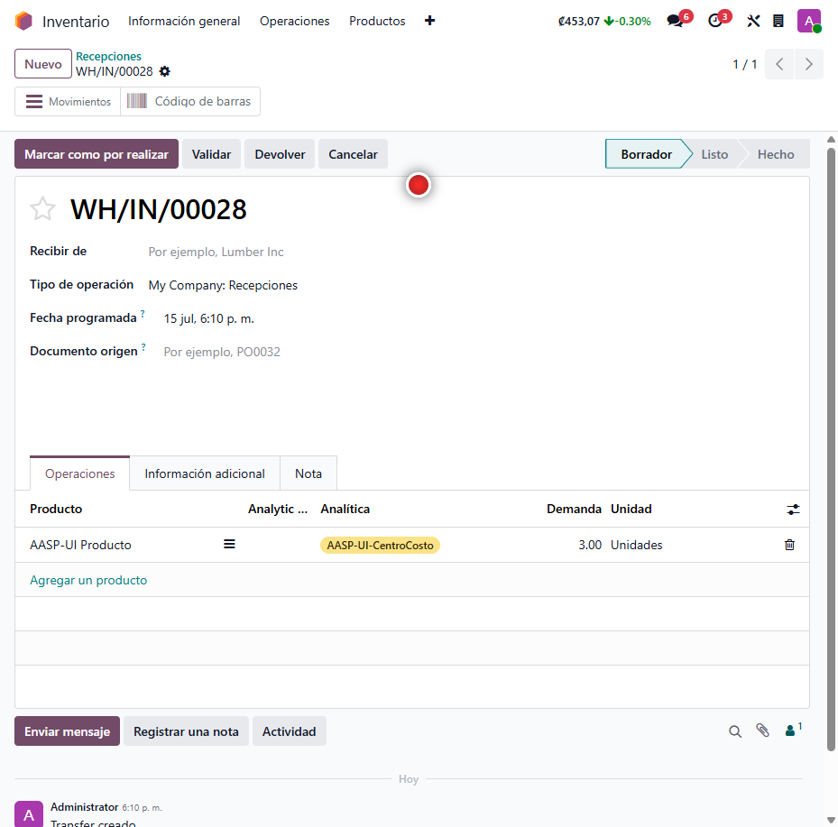
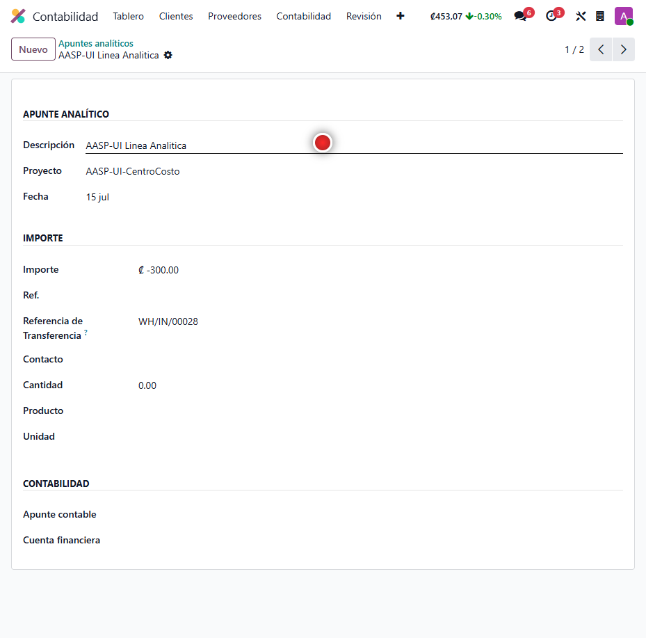
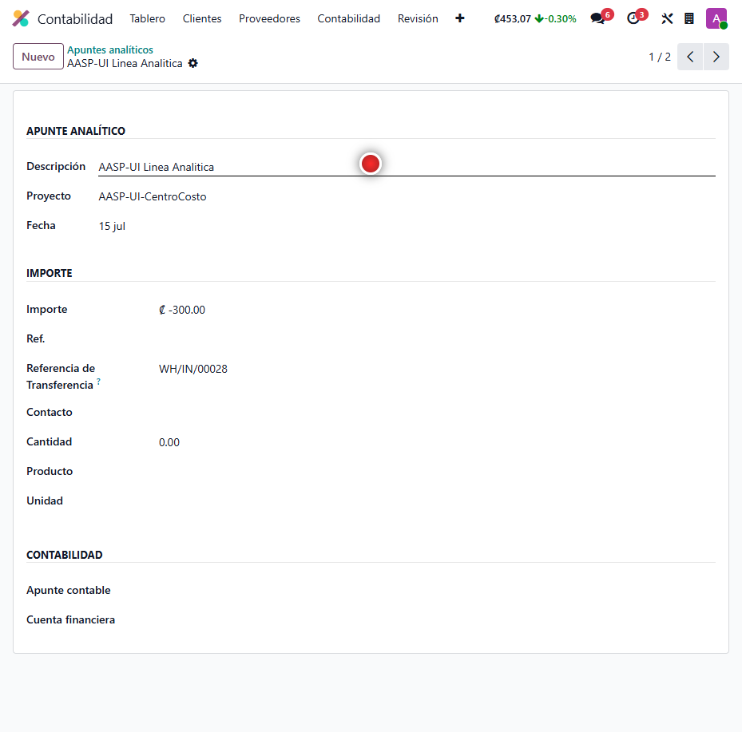

Cuenta Analítica en Transferencias de Inventario
Lleva el centro de costo, proyecto o departamento que asignás en la venta o la compra hasta el traslado de inventario y hasta el costo contable del producto. Sin planillas ni ajustes manuales: cada gasto queda imputado al lugar correcto de forma automática.
Capturas del proyecto
01 / 05




El costo del inventario que no sabés a qué proyecto pertenece
Cuando una empresa maneja proyectos, sucursales o centros de costo, necesita saber a cuál pertenece el costo de cada producto que compra o vende. Hacerlo a mano, asiento por asiento, es lento y propenso a errores.
Este módulo toma la distribución analítica que ya asignás en la orden de compra o venta y la propaga sola: aparece en el traslado de inventario, se registra en el asiento de valoración del costo y queda enlazada al número de la transferencia física. El equipo de bodega y el contable ven la misma información, sin retrabajo.
Funcionalidades clave
-
Analítica en cada traslado
La recepción y la entrega muestran una columna con el centro de costo heredado de la orden.
-
Costo imputado al centro correcto
La distribución se registra en la línea de costo del asiento de valoración de inventario.
-
Trazabilidad hasta el traslado
Cada apunte analítico guarda el número de la recepción o entrega que lo originó.
-
Corrección de históricos
Una tarea programada corrige de una sola vez los movimientos previos que no tenían analítica.
-
Cero trabajo manual
La analítica viaja sola desde la orden; el contable no reescribe asientos uno por uno.
-
Ventas, compras e internos
Funciona en entregas de venta, recepciones de compra y traslados internos.
Tecnología detrás del producto
¿Necesitás saber a qué proyecto pertenece cada costo de inventario?
Adapto la propagación de centros de costo a tu operación y a tu plan de cuentas analítico.